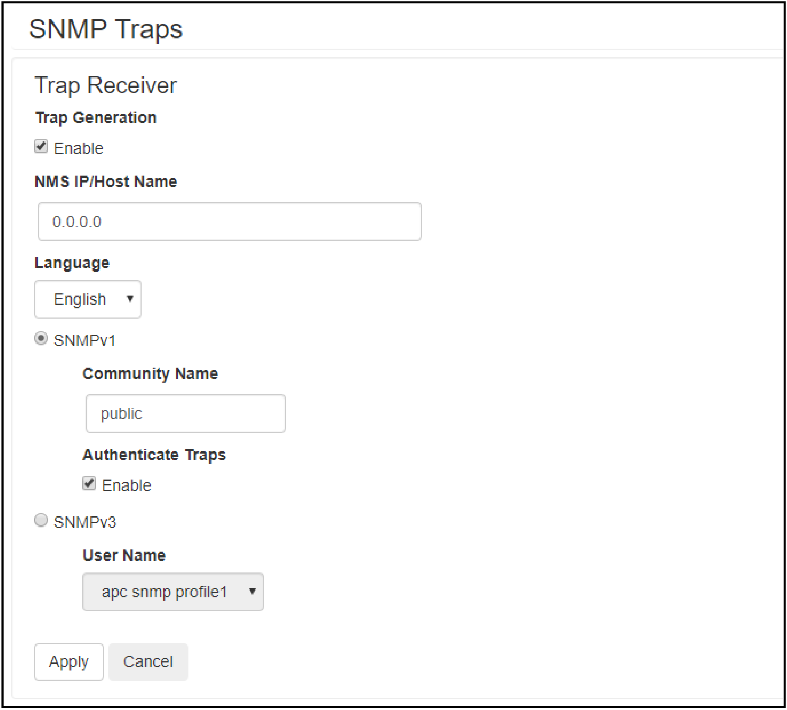

A SNMP trap receiver needs to be configured to receive the SNMP
traps from the NMC in a Reality system. Up to six trap receivers can
be added for each NMC.
Super users, administrators and device users can add and configure
SNMP traps from the CLI and the web interface.
Add and Configure SNMP Trap Receivers from the CLI
Log in to the CLI.
To see the configuration options type snmptrap ?.
Note: In the table [n] is the number of the trap receiver (1–6).
Setting
Command
Argument
Description
Community
-c[n]
<Community Name>
Select what SNMPv1 community name to use.
Receiver NMS IP
-r[n]
<IP address>
Set the IP address for the trap receiver.
Language
-l[n]
<Language>
Select language code.
Trap Type
-t[n]
snmpV3 | snmpV1
Select if the trap receiver should use SNMPv3 or SNMPv1.
Generation
-g[n]
enable | disable
Enable or disable trap generation.
Auth Traps
-a[n]
enable | disable
Enable or disable
trap authentication for SNMPv1.
User Name
-u[n]
profile1 | profile2 | profile3 | profile4
Select what SNMPv3 user name to use.
For example, to set the trap receiver number 1 to an IP address
of 255.255.255.255 using SNMPv3 and the user name for profile1 type: snmptrap -r1 255.255.255.255 -t1 snmpV3 -u1 profile1
-g1 enable and press Enter.
If the SNMP trap command was entered correctly a Success response is displayed, indicating
that the SNMP trap was created with the chosen settings.
Add and Configure SNMP Trap Receivers from the Web
Interface
Here a list of the current trap receivers is displayed, if
there are any. To configure an existing trap receiver, click on the
NMS IP/host name.
To add a new trap receiver:
Click Add Trap Receiver. Here the settings for the SNMP trap can be configured.

Check the Enable box
under trap generation.
Specify the IP address of the trap receiver under NMS IP/Host Name.
Select either SNMPv3 or SNMPv1 to use. For SNMPv3 select the
user name that should be used. For SNMPv1 select the community name
to use and select if the traps should use authentication.